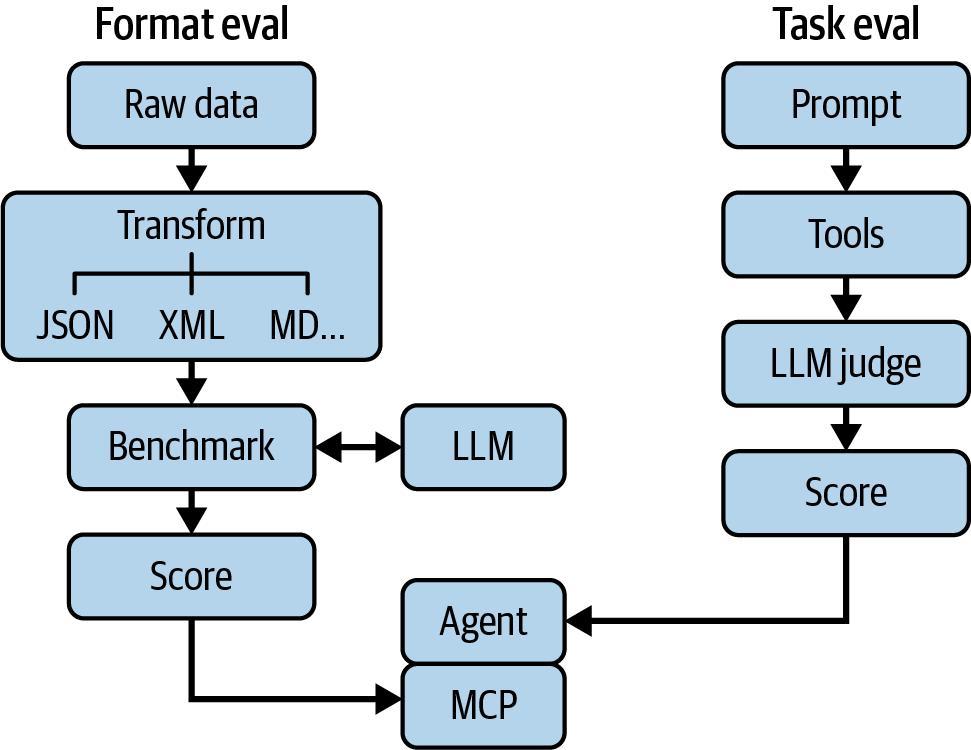

<title>第 21 章　大型語言模型的可觀測性 — 《可觀測性工程》第二版</title>
<link rel="stylesheet" href="style.css">

<nav class="chapnav">
    <a href="ch20.html">← 上一章</a>
    <a href="index.html">目錄</a>
    <a href="ch22.html">下一章 →</a>
  </nav>
<main>
  <header class="masthead">
    <span class="eyebrow">Observability Engineering · Second Edition</span>
    
    <h1 class="title serif">第 21 章<br>大型語言模型的可觀測性</h1>
    <div class="rule"></div>
  </header>

  <p>人工智慧在過去兩年間是一場革命。無論是消費端具有變革性的數位體驗（如推薦引擎、搜尋引擎和垃圾郵件防護），還是商業工作流程（如翻譯和物流），人工智慧與機器學習已經驅動這些應用長達數十年之久。然而，LLM 的問世開啟了一個由 AI 驅動的應用程式與工具的新紀元。各組織已積極擁抱 LLM 在程式輔助、資料的自然語言介面、新型搜尋產品、支援機器人等方面的潛力。</p>
<p>雖然 LLM 應用程式往往能以少量前期投入就令人印象深刻地證明一個概念，但真正的工作是在展示之後才開始的。LLM 與大多數傳統軟體工作負載不同，其設計與使用中固有的不可預測性，導致了一個根本性的挑戰：用戶與工程師都期望軟體系統的輸出具有可預測性，但 LLM 本質上是非確定性的。我們該如何調和這種矛盾？</p>
<p>在本章中，我們將深入探討這一新世代 LLM 驅動應用程式的可觀測性領域。你將學到如何透過評估來持續改善這些應用程式的性能與用戶體驗（UX）。除了理論之外，我們還會運用兩個不同的 LLM 驅動 Honeycomb 產品——Query Assistant 和 Canvas——的案例研究，來展示我們所討論內容的實際應用。我們會在本章逐步介紹這兩項產品。</p>
<p>Phillip Carter 是本章的主要貢獻者。</p>
<h2 class="section serif">為什麼可觀測性對 LLM 至關重要</h2>
<p>LLM 代表了機器學習模型在能力與普及性上的一次躍進，對企業組織與開發者皆然。傳統上，AI 被用來為用戶解決各種沒有「標準答案」的問題——例如根據用戶偏好推薦電影，或判斷一封電子郵件是否為垃圾郵件——但通常成本高昂。LLM 大幅降低了進入門檻，讓「任何持有信用卡的人」都能透過 API 向模型發出提示，徹底改變了這個局面。</p>
<p>然而，傳統的可觀測性與監控方法並不適合用來理解這類應用程式。雖然這些方法有助於建立高層次的訊號或監控成本，但無法洞察導致不良結果的行為。主要原因是什麼？不透明性。你無法把除錯器連接到 LLM 上，去了解它為什麼針對特定輸入給出特定輸出；你甚至無法保證，不管給它多少次相同的輸入，它都會產生相同的輸出。雖然有些參數——例如 temperature 和 top_p——可以控制輸出的分布，但目前仍無法保證可重現性。讓我們的理解嘗試更加複雜的是，自然語言輸入的範圍幾乎是無窮無盡的。你的用戶總會用你意想不到的、最有創意的方式來要求同一件事——這還是假設你的用戶沒有拚了命想讓你的 LLM 說出或做出一些好玩的事情。</p>
<p>除此之外，LLM 正以驚人的速度進步。單單在 2025 年，得益於工具、框架的改進，以及像工具呼叫（tool calling）這類技術的進步，模型的能力在一年之內就實現了跳躍式的成長。傳統的迭代式設計與開發方法根本跟不上這種瘋狂的步調。即使未來進步速度放緩，在開發 LLM 應用程式時快速迭代仍然大有助益。調整模型行為，往往是調整提示（prompt，即給 LLM 的自然語言指令）的問題，而非推送確定性的程式碼變更。要達到更高的準確度、可靠性或任務完成率，通常兩者都需要。</p>
<p>這種模式與理解 Web 應用程式用戶體驗（UX）的傳統認知形成鮮明對比。量化用戶體驗的常見模型——例如 Apdex 或其他衍生指標——主要以 API 或端點速度作為代理指標。2006 年，Greg Linden 曾展示 Amazon 的延遲實驗發現，頁面延遲每增加 100 毫秒，營收就會大幅下降。同年，Google 也發現，半秒的延遲會讓搜尋流量下降 20%！</p>
<p>但這對 AI 應用程式並不成立——雖然像「首個 token 出現時間」這類量測指標可能有其價值，但快速（卻不正確）的回應未必能帶來滿意度。</p>
<p>此外，在更複雜的代理式應用程式中，例如研究助理或程式碼審查工具，失敗本身可能不是一個有價值的訊號。代理可能因為許多原因無法擷取網頁，或是傳遞了不正確的參數給遠端 API。在這些情況下，某個離散操作是否失敗較不重要，重要的是了解整體任務是否完成。除此之外，AI 應用程式還引入了非常明確的成本組成。GPU 時間相當寶貴，其定價也反映了這一點。理解權杖（token）使用量與用戶滿意度之間的取捨，對企業和工程師來說都至關重要。</p>
<p>系統內部運作不透明、技術快速演進，以及遙測中缺乏能真正反映用戶體驗的代理指標，這些問題並非 LLM 應用程式所獨有。諷刺的是，這三點在某種程度上恰好呼應了可觀測性的基本原則，應用於分散式系統的湧現行為上。我們預期系統會發生故障，我們預期其他服務不值得信任，我們也知道任何事情都有其代價。在這兩種情況下，答案是一樣的：我們需要能描述系統行為的檢測與遙測。這正是讓現代系統得以在規模化的情況下被理解、被認識，並持續改進的關鍵。但我們該測試什麼呢？我們需要某種標準來衡量系統性能。為此，我們轉向評估。</p>
<h2 class="section serif">使用評估來提升 LLM 可靠性</h2>
<p>評估（簡稱 evals）是建構可靠 LLM 應用程式的基礎組成。雖然它們在某些方面與單元測試或整合測試相似——對於給定的輸入都有預期的輸出——但它們引入了一種不確定的預期層級，使其與眾不同。簡而言之，一項評估可能有三種結果：通過、失敗，以及「也許」。</p>
<p>評估的威力在於，你可以將它們相互結合並整合進可觀測性計畫中，以打造可靠、有幫助又實用的 LLM 應用程式。舉例來說，在 Honeycomb，我們將一組評估作為開發 Canvas 產品的關鍵輸入。Canvas 是一種 AI 聊天體驗，用戶可以提出開放式問題，模型會透過呼叫工具查詢遙測資料來回答問題。讓我們逐一走過這些評估，說明它們的運作方式。</p>
<p>我們有兩組評估：問題評估和任務評估。前者是一系列問題，涉及從一組黃金資料中提取事實項目。黃金資料是為某項任務手工製作（或以其他方式具代表性）的輸入資料。以 Canvas 為例，它是來自 Honeycomb 的各種查詢結果。我們確切知道這些資料中包含什麼，並評估模型從中提取特定事實的能力，例如「最多請求發生在什麼時間」或「哪一類錯誤最為常見」。這些問題更精確地被稱為評估的任務函式（task function）——它是產生輸出的部分，而這個輸出將呈現給用戶，或被傳回</p>
<p>一個代理循環。最後，我們有一個評分函式，用於評估模型回應的優劣。就我們的目的而言，我們使用簡單的字串比對啟發式方法——我們知道黃金資料中存在的實際值，只需驗證模型是否呈現出這個已知答案即可。</p>
<p>這些問題型評估會搭配另一組我們稱為「任務評估」的組合（見圖 21‑1）。兩者的差異在於，任務評估沒有簡單的評分函式；它們是模糊、主觀的任務，基於我們內部的生產監控。我們不會要求單一答案的內容，而是要求模型執行調查、判斷性能回歸的根本原因，或其他類似需要判斷力的工作流程。這裡通常沒有單一「正確」答案，因此我們評分的依據是模型實際採取的步驟。為了做到這一點，我們必須擁有工作流程執行的遙測資料——而這形成了一個正向回饋循環：我們可以利用遙測資料找出用戶不滿意或模型表現不佳的情境，接著將這些情境轉化為可用來迭代改善的評估。</p>
<figure class="plate">
<figcaption>圖 21‑1。獨立的評估循環。</figcaption></figure>
<p>正是這個循環，是驅動 LLM 應用程式持續改善的核心。擁有一組可靠的評估，能讓你有機會進行實驗。當新版本模型發布時，你可以針對新模型執行你的評估，並衡量其變化。你也可以針對提示詞或工具封裝的變更，重播現有的工作階段（session），並追蹤行為上的差異。</p>
<p>雖然本書並不打算全面討論評估設計，1但重要的是要記住，你的評估與單元測試相似。最終，這些測試只涵蓋了 LLM 應用程式整體功能中很小的一部分——也就是應用程式與語言模型互動的那部分。你可以擁有出色的評估機制，卻搭配糟糕的用戶體驗；這正是可觀測性得以彌補的落差。要為這些應用程式實現可觀測性，得從遙測開始。</p>
<h2 class="section serif">為 LLM 應用設計遙測</h2>
<p>LLM 應用的檢測與遙測，在概念上與其他任何應用程式的檢測相似，你關心的都是輸入與輸出、請求與回應、API 呼叫的持續時間等等。值得慶幸的是，其中不少檢測工作可以透過 LLM 客戶端函式庫內建的 OpenTelemetry 檢測自動產生。大多數 LLM 互動的建模方式可以在 OTel 生成式 AI 語意慣例中找到，而與 LLM 提供商互動的函式庫應該遵循這些慣例。</p>
<p>如果你查看這些慣例，會發現常見的值，例如輸入與輸出 token 數量、模型名稱、取樣參數以及系統提示詞，都會記錄在客戶端跨度上。如果你使用自己的LLM 客戶端框架，會希望遵循這些慣例，以建立最具可攜性的遙測資料。</p>
<p>不過，在為你的應用程式設計遙測時，仍有一些獨特的考量與問題需要回答：</p>
<p>對於輸入與輸出，你應該擁有多少可見性？</p>
<p>用戶對 LLM 的提示詞千變萬化，而且往往可能非常龐大。這一點在慣例中有詳盡討論，我們在此不再重述，但值得思考。處理這個問題有幾種不同方式，其中一種值得考慮的做法是：你可能會將模型的輸入與輸出獨立於遙測資料之外進行記錄——與其把輸入與輸出寫入某個屬性值，不如加入指向記錄系統的連結作為屬性值。這樣做有其缺點（也就是說，你需要追蹤這些連結才能真正看到某個 session 中的內容），但總比完全沒有可見性要好。你可以選擇僅以這種方式省略特定的輸入或輸出（例如圖片或PDF 之類的二進位檔案）。在設計遙測時，你也應該考量用戶的隱私期待與相關法規。用戶可能——而且確實會——在使用 LLM 系統時判斷力不足，因此在思考自己想要或需要儲存哪些內容時，你應該對自己保持謹慎。</p>
<p class="fn">1 關於評估與評估框架的更多細節，請參閱〈Evaluating Large Language Model (LLM) systems:Metrics, challenges, and best practices〉一文，該文對此有完整概述，並對特定指標與測量方式有更深入的說明，同時附有一些建置 evals 的實務範例。</p>
<p>你要如何將評估迴圈與遙測資料整合在一起？</p>
<p>理想情況下，你應該能夠輕鬆地把用戶互動中的某些追蹤「提升」為評估項目。這與先前討論輸入輸出的考量點相輔相成。值得慶幸的是，許多現成的評估框架也支援 OTel，讓你能夠在兩個不同的模型或提示詞變體之間，對用戶會話進行同類比較。</p>
<p>你應該如何進行成本追蹤？</p>
<p>隨著 LLM 使用量（以及支出）持續攀升，組織正要求更高的投資報酬率——或至少要能夠將價值歸因於每月的 AI 帳單。你可能會注意到，語意慣例中並沒有針對成本資料訂定標準屬性鍵。你可以選擇自訂一個，或是在查詢時根據所使用的模型與 token 數量來推算成本。我們建議採用後者，因為這樣可以讓你輕鬆地在不同提示詞版本或模型更新之間，直接目測比較成本差異。</p>
<p>你要如何將用戶反饋追蹤整合到你的遙測資料中？</p>
<p>傳統的可觀測性做法可能會用錯誤或 API 回應時間之類的代理指標，作為用戶體驗（UX）的主要訊號。但這在 LLM 應用程式中未必適用。快速但錯誤的回應，不太可能為你的用戶帶來愉悅的體驗。在遙測資料中加入UX 屬性，例如反饋訊號（按讚／倒讚、用戶重試等），是一項強大的技巧，能幫助你更深入了解系統在生產環境中的運作狀況，同時也有助於找出新的評估項目。</p>
<p>LLM 應用程式與功能在你的系統中可能是一座座功能孤島，但多數時候它們仍需與後端的其他服務互動，涵蓋從授權、驗證到資料庫等各種功能。截至撰寫本文為止，AI 應用程式中一個新興的模式是代理（agent）模式：LLM 在迴圈中呼叫工具，並具備修改其所處環境的能力。代理需要存取內部與外部的 API，以執行各式各樣的功能——從與其互動的用戶相關的情境資料，到先前對話的歷史紀錄，再到內嵌或第三方的知識庫與遠端 API，無所不包。</p>
<p>雖然代理通常是以全新應用程式的形式開發，但它們幾乎會與現有系統的每個層面互動並產生連結。這裡的關鍵洞見在於：LLM 的遙測設計不僅僅是要觀察LLM 在做什麼，或用戶如何與它互動，更重要的是要理解應用程式中 AI 部分與系統其餘部分之間的連結關係。</p>
<h2 class="section serif">分析 AI 應用程式的遙測資料</h2>
<p>如前所述，AI 應用程式的自然語言輸入具有幾乎無窮的變化性、複雜性，且不具確定性。雖然你可能擁有記錄互動每個層面的遙測資料，但僅從單一軸向來檢視這些資料，往往</p>
<p>會導致不理想的結果。只看錯誤或許能列出優先修復的錯誤清單，但這未必能改善產品的整體用戶體驗。</p>
<p>整體而言，把你的分析工作流程分成兩種不同的成果來思考，會很有幫助：</p>
<p>1. 確保 AI 應用程式中確定性的部分正常運作</p>
<p>2. 為應用程式中非確定性的部分建立持續改善循環</p>
<p>前者在本書中已有大量著墨，許多相同的建議依然適用。屬性的多維度分析能幫助你找出錯誤、發現性能衰退、並改善整體性能。截至撰寫本文時，一個常見的例子是利用可觀測性來把上游 LLM 供應商視為一種資源加以理解。追蹤來自遠端供應商的速率限制、重試次數與回應時間，是改善用戶體驗以及管理成本結構的關鍵細節。</p>
<p>一個具體的例子是使用遙測分析來判斷快取行為。LLM 提供商大力鼓勵呼叫端善用 token 快取，並透過大幅降低成本來提供誘因。遙測可以協助你找出可以使用快取的機會，或是發現你在何處錯誤地讓快取失效了。提供商通常會在其API 回應中提供這項資訊，所以務必將其納入你的 span 中！</p>
<p>此外，由於各種因素，上游模型提供商經常會逾時，或無法服務原本有效的請求。能夠透過服務水準目標（SLO）來追蹤與監控這類問題，是很值得投入時間的做法。工程師通常會採用閾值警報來提醒他們這類問題，但這類警報本質上是不可行動的，應該予以避免（當然，如果讀者剛好隸屬於某家 LLM 推論提供商，那麼你可能確實應該針對這類情況設置閾值警報），因為你對此其實無能為力。在這種情況下，SLO 是更好的選擇，因為它能夠平滑這些間歇性的尖峰，並幫助你的團隊聚焦在對用戶體驗有意義的劣化上。</p>
<p>Honeycomb 的 Model Context Protocol（MCP）伺服器就是這個飛輪效應運作的絕佳範例。在開發 MCP 伺服器時，我們在開發評測（eval）以及蒐集有關工具實際運作表現的回饋時，只能取用有限的資料集。雪上加霜的是，Honeycomb 工程師可用的檢測與遙測，相較於一般的 Honeycomb 客戶以及一般組織而言，其實相當獨特。畢竟 Honeycomb 是一款可觀測性工具——我們的工程團隊已經習慣使用支援高基數資料的工具。為了了解客戶是如何</p>
<p>使用 MCP 伺服器時，我們需要以某種方式檢測工具，讓我們不僅能看到用戶正在使用哪些工具，還能看到這些工具在何處失敗。我們特別留意這個過程中的錯誤，以便判斷該將工程資源投入到哪裡。MCP 伺服器是一個有趣的案例，因為你看不到呼叫者的邏輯，或是它為何使用某個特定工具或傳入特定參數的理由；你只能看到它實際在做什麼。我們決定將查詢的成功率 SLO 設為 90%，然後靜觀其變。</p>
<p>在這個過程中，我們發現了幾個有趣的事實。首先，呼叫模型傾向於對欄位名稱妄下結論，即使已提示要先檢查可用的欄位。其次，我們注意到模型在解讀與修改時間範圍方面存在顯著問題。這些回饋為我們的評估提供了依據，讓我們得以歸納出整類的錯誤與問題，並針對這些問題建立測試案例，開始迭代提示詞、工具描述等內容。</p>
<p>這個基本的飛輪特別適合用於 AI 應用程式的開發，無論其類型為何。遙測資料成為理解用戶如何與你的應用程式互動及參與的黃金標準，為你的開發流程提供持續改進的動力。</p>
<h2 class="section serif">將可觀測性資料導入 AI 應用程式開發</h2>
<p>有兩種主要方式，可以將來自 AI 應用程式的可觀測性資料整合到你的開發週期中。第一種，如前所述，是作為評估的來源。第二種，則是作為軟體套件（harness）的回饋。這是什麼意思呢？廣義來說，harness 是你在應用程式中圍繞 AI 所建構的確定性程式碼。這個 harness 負責從提供工具給 AI（讓它可以呼叫來執行工作的方法與函式），到修正輸入或輸出中的錯誤，再到 AI 如何與終端用戶溝通等一切事務。可以說，它是你的應用程式及其各種服務與語言模型本身之間的管線。</p>
<p>雖然對任何應用程式來說，做到這一點都很重要，但對 AI 應用程式而言更為迫切，正是因為它們在不同環境或用戶之間，不太可能有一致的行為表現。在傳統應用程式中，你可以建立大量涵蓋幾乎所有用戶可能互動情境的測試案例，然後在一組同質化的環境中執行這些測試。但 AI 應用程式並非如此。無論多少測試都不可能涵蓋每一種互動情境，而目前 AI 的創新步調如此之快，幾乎無法保證你今天所做的決策，能有超過六個月的有效期。你必須在生產環境中進行測試。</p>
<p>試圖僅透過改善提示工程來解決所有挑戰，聽起來很吸引人。但儘管這是建構AI 應用程式的重要一環，通常只要加上一點程式碼就能大幅改善狀況。Honeycomb 的 Query Assistant 功能就是一個例子。這項功能發布時，大約有 25% 的機率會產生某種錯誤。對於剛推出的 LLM 驅動功能而言，這樣的高錯誤率相當常見。當 Honeycomb 的開發人員檢視一些最常見的錯誤時，他們發現許多都是解析或驗證錯誤——OpenAI 回傳的回應是一個 JSON 物件，但其結構無法通過驗證檢查。舉例來說，請看以下這個 JSON 物件：</p>
<pre class="code">{
  <span class="tok-string">"calculations"</span>:[
    {<span class="tok-string">"op"</span>:<span class="tok-string">"COUNT"</span>, <span class="tok-string">"column"</span>:<span class="tok-string">"exception.message"</span>}
  ],
  <span class="tok-string">"filters"</span>:[
    {<span class="tok-string">"column"</span>:<span class="tok-string">"exception.message"</span>,<span class="tok-string">"op"</span>:<span class="tok-string">"exists"</span>},
    {<span class="tok-string">"column"</span>:<span class="tok-string">"parent_name"</span>,<span class="tok-string">"op"</span>:<span class="tok-string">"exists"</span>}
  ],
  <span class="tok-string">"breakdowns"</span>:[
    <span class="tok-string">"exception.message"</span>,<span class="tok-string">"parent_name"</span>
  ],
  <span class="tok-string">"orders"</span>:[
    {<span class="tok-string">"op"</span>:<span class="tok-string">"COUNT"</span>,<span class="tok-string">"order"</span>:<span class="tok-string">"descending"</span>}
  ]
}</pre>
<p>在查詢助手（Query Assistant）功能中，該物件試圖表示「依呼叫方統計例外次數」的查詢——這是使用者使用 Honeycomb 時常見的情境。然而，這個結果有個微妙的錯誤。表示 COUNT 運算子的結構是錯的，因為 COUNT 並不需要以欄位作為輸入。像下面這樣的正確回應，就不會包含該欄位：</p>
<pre class="code">{
  <span class="tok-string">"calculations"</span>:[
    {<span class="tok-string">"op"</span>:<span class="tok-string">"COUNT"</span>}
  ],
  <span class="tok-string">"filters"</span>:[
    {<span class="tok-string">"column"</span>:<span class="tok-string">"exception.message"</span>,<span class="tok-string">"op"</span>:<span class="tok-string">"exists"</span>},
    {<span class="tok-string">"column"</span>:<span class="tok-string">"parent_name"</span>,<span class="tok-string">"op"</span>:<span class="tok-string">"exists"</span>}
  ],
  <span class="tok-string">"breakdowns"</span>:[
    <span class="tok-string">"exception.message"</span>,<span class="tok-string">"parent_name"</span>
  ],
  <span class="tok-string">"orders"</span>:[
    {<span class="tok-string">"op"</span>:<span class="tok-string">"COUNT"</span>,<span class="tok-string">"order"</span>:<span class="tok-string">"descending"</span>}
  ]
}</pre>
<p>在這個範例中，第一個物件大致上是正確的。事實上，透過程式化的方式將column 欄位從 COUNT 計算物件中移除，不僅讓這個查詢物件完全通過驗證，這次後處理所產生的結果也正是給定輸入後應該產生的理想查詢。因此，Honeycomb 決定不讓這類錯誤直接驗證失敗、對用戶不產生任何結果，而是透過程式化修正結構的方式來介入處理，使其通過驗證檢查。</p>
<p>透過分析這類輸出結果，並僅發出這些人工修正，Query Assistant 的錯誤率從 25% 降到約 14%。之後，對提示詞的改進更將錯誤率降到 1% 以下（不含逾時或其他無法控制的錯誤）。</p>
<p>最後，這個故事還有個有趣的插曲：更廣泛的工程團隊發現，這些由 AI 產生的查詢其實反映了用戶一項未被滿足的需求。用戶確實希望能對某個欄位執行COUNT，於是我們推出了一項變更，允許這種查詢語法。這麼一來，我們不僅能減少一些錯誤修正程式碼，還能提升 Query Assistant 的性能！</p>
<h2 class="section serif">同時運用評估與可觀測性</h2>
<p>如果你已經透過 AI 應用程式的正式環境追蹤來收集輸入、輸出和錯誤，那麼你已經完成了有效評估飛輪 90% 的工作。你擁有關於用戶實際如何使用該功能的真實資料：用戶所要求的內容類型、LLM 所使用的資料來源與工具，以及回應內容。你可以匯出這些資料——或是在專用工具中,根據這些資料產生新的評估——並開始根據實際發生的情況來更新你的評估。</p>
<p>此處的基本循環如下：</p>
<p>1. 這些新的輸入是我們想要用來評估的東西嗎？一般來說，答案是肯定的。接著：</p>
<p>a. 對於這些輸入，是否存在理想輸出？現有輸出是否就是理想輸出？</p>
<p>輸出？</p>
<p>b. 若不是，請根據輸入更新輸出至應有的樣子。</p>
<p>2. 重複步驟 1，直到你以真實用戶行為充實了黃金資料集。</p>
<p>3. 從黃金資料集中移除不具代表性、不符合真實用戶行為的項目。</p>
<p>重新執行評估並與歷史趨勢比較。如果這是新的應用程式或工作流程，你很可能會看到評估表現大幅下降——這</p>
<p>這是可以預期的,因為現實世界的用例經常會與你意想不到的情況交會。</p>
<p>一個實際的例子是我們如何更新 Canvas 的任務評測。如前所述,任務評測是一個非常一般化、具有已知答案的目標。我們關心模型得出這個答案要花多少步驟、用掉多少 token,以及答案是否包含幾個特定的結論。我們使用LLM‑as‑a‑Judge 依據某些標準將回應評分為簡單的通過／失敗,然後定期挑選一部分樣本進行人工審查。</p>
<p>這種人工審查是有效可觀測性（以及評估）中最重要的環節之一，因為它能揭露出 LLM 可能忽略的洞見。我們注意到某個任務有持續性的失敗，原因是模型誤解了結果資料中某個欄位的意義。這個欄位名為 is_slow，當請求耗時超過 500 毫秒時會被設為 true。模型無法看出這個欄位其實是一個計算欄位（Honeycomb 查詢時期的建構，能根據事件中其他屬性值來產生新的值），因此誤以為這個欄位是一個 feature flag。由於找不到其他解釋，模型便自行推論 is_slow 屬性代表當時正在進行負載測試（或其他外部事件）導致請求變慢，並把這個推論納入結果之中。這樣的誤解讓模型忽略了真正造成延遲的根本因素——它實際上是在做一場徒勞無功的追查。</p>
<p>我們的解決方案是什麼？我們更新了該欄位，加上一段描述說明它實際上是什麼，結果模型突然就不再理會它了！接著它便能成功進行調查並找出根本原因。實務上，這是 AI 代理和 AI 應用程式極為常見的一種失敗模式：模型錯誤地推斷或臆測了某個意義，進而導致錯誤的假設與結論。良好的可觀測性與良好的評估能讓你在正式環境中察覺這類問題，並更新你的軟體框架來加以修正，或是更新你的提示詞以更好地引導模型行為。</p>
<p>最後針對公開基準測試與通用指標補充一點：許多組織已經發布並推廣了各種衡量指標，用來評估幻覺、毒性、語氣、真實性、偏見等面向。前沿實驗室會依據這些公開的基準測試來評估自家模型，並產出非常漂亮的圖表，展示自己的表現如何。這些基準測試與衡量指標本身並非壞事，但它們可能極具誤導性。你可能會發現，你的 AI 應用程式在這些基準測試上表現相當出色，卻完全無法為終端用戶帶來價值。多花點心力，在你的 AI 系統與應用程式其餘部分之間整合遙測，並打造出評估與可觀測性相結合的學習飛輪，你就能更清楚了解這些功能對終端用戶的實際成效如何，以及該如何朝這些目標加以改善。</p>
<h2 class="section serif">結論</h2>
<p>AI 應用程式的可觀測性核心，其實與其他應用程式的可觀測性大同小異。LLM的非確定性特質帶來獨特的挑戰，但已經在實踐可觀測性的團隊會發現，他們現有的工具與框架都能輕易沿用。</p>
<p>本章的核心洞見是學習飛輪：生產環境的遙測數據回饋評估，評估改善框架設計，而這些改善又會反映在遙測數據中。正是這個循環，讓錯誤率從 25% 降到不到 1%，讓你能發現模型誤解了某個欄位名稱並用描述加以修正，也讓你能發現模型在猜測欄位並修正其行為。</p>
<p>在 AI 的時代，人們很容易想對每個問題都採用 AI 原生的解決方案。但基本原則並未改變：做好檢測、有意圖地分析、監控對用戶與業務真正重要的事，並建立能持續累積效益的回饋循環。建構 AI 應用程式的門檻已大幅降低，但要成功妥善運作它們，仍取決於你是否對客戶、業務與團隊懷抱同理心。</p>
<p>接下來，我們將轉向由客座作者 Kesha Mykhailov 所提供的本章與全書總結。Kesha Mykhailov 是 Fin（前身為 Intercom）的資深產品工程師。Fin 團隊在建構與運作其 AI 代理 Fin 的歷程，深刻展現了可觀測性能為現代軟體工程團隊帶來的契機。</p>

  <footer class="colophon">
    <span>《可觀測性工程》第二版 · 第 21 章</span>
    <span>大型語言模型的可觀測性</span>
  </footer>
</main>
